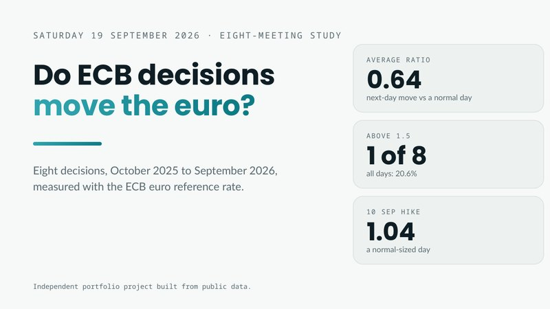

I check the numbers before anyone else has to.
I turn market and economic data into research people can act on, and I build the checks that keep it right. Industrial Engineering taught me to ask where a process breaks. Markets taught me what it costs when it does.
Research reports delivered to professional traders since July 2026.
BRIEFINGS, RECAPS, POSITIONING, CENTRAL BANKSCentral banks covered in depth, each on its own policy framework.
FED · ECB · BOE · BOC · RBA · RBNZTeaching CAD and running an engineering lab before moving into data.
TELKOM UNIVERSITY, 2022 TO 2024A process, not a guess.
The same four steps behind every report. It is the Industrial Engineering habit applied to data.
Start at the source
Central banks, statistics offices and exchanges first. Commentary second.
Check every figure
Value, date and unit, before a number goes anywhere.
Turn mistakes into rules
When something slips, I write the rule that stops it happening again.
Say it plainly
What changed, why it matters, and what to watch next.
Engineer's habits, analyst's work.
Market data, read carefully
Futures positioning, economic releases and central bank decisions, worked through in Excel and Google Sheets and checked before they are used.
Context engineering
I don't rely on one clever prompt. I give AI a structured context, with memory files, rules, checklists and a fact log, so a draft on day one hundred is as reliable as on day one.
memory → rules → checklist → fact log → human review
Process first
Production timelines on an aircraft program, lab operations and teaching. I see work as a system.
Plain English
Reports for busy readers: the point first, the evidence next, no padding.
Tools, built with AI
Working apps since early 2026, from a job screener to a trading dashboard, each one built for a real need. Next on the list: SQL and dashboards.
One ECB week, start to finish.
Eight documents written as the week unfolded, plus an Excel study across eight meetings. Public data only.

Why did the ECB's hike barely move the euro?
The hike was priced in at more than 95%, the guidance did not change, and US data landed fifteen minutes later. Across eight meetings, decision days moved the euro no more than ordinary days.
Open the case studyTools I needed, so I built them.
No coding background. I write the specs and the rules, AI writes the code, and I test every change. Each page has the story behind the tool and a demo you can try.

Trading Dashboard
I was opening six websites for every trading session. Now it is one screen.

AI Job Screener
After graduating I was checking job boards every day. This does the reading first.

Macro Master
The markets course gave me the pieces. I wanted one place that connects them.

Ledgerline
Running the shop's cash every day made me want the same clarity for my own money.

Flow Dashboard
Work, the shop, study and side projects. I needed to see the whole day at once.
Have a problem worth solving? Let’s talk.
Data, research, operations or something new. I learn fast, build what is missing, and check the numbers before anyone else has to. Indonesia or remote, and I reply to every message.